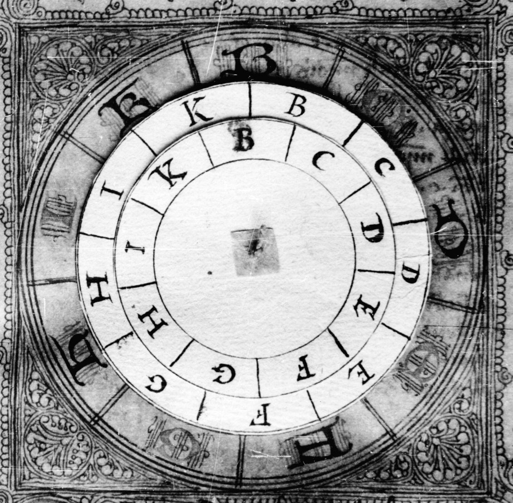
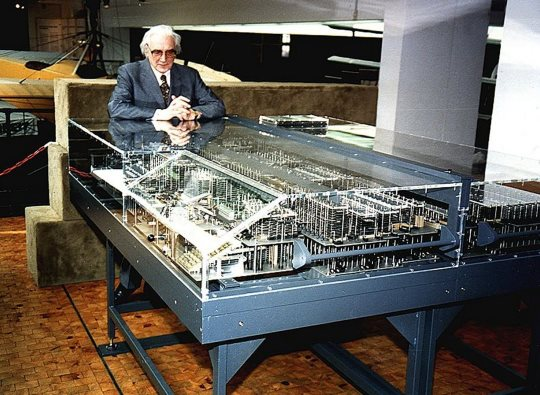
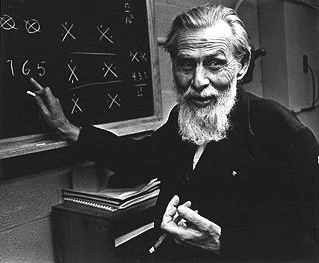
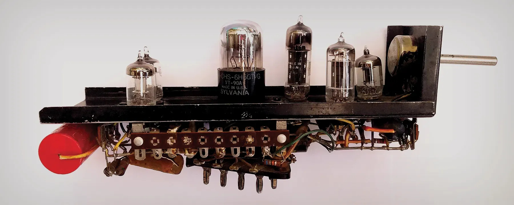
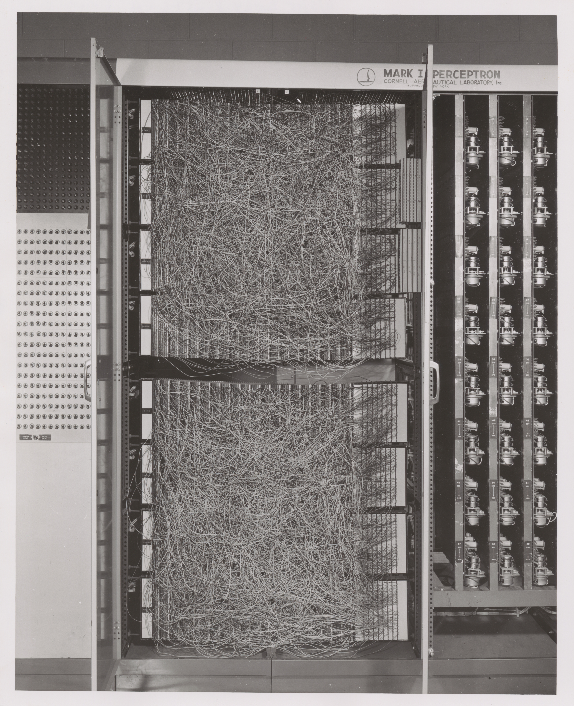
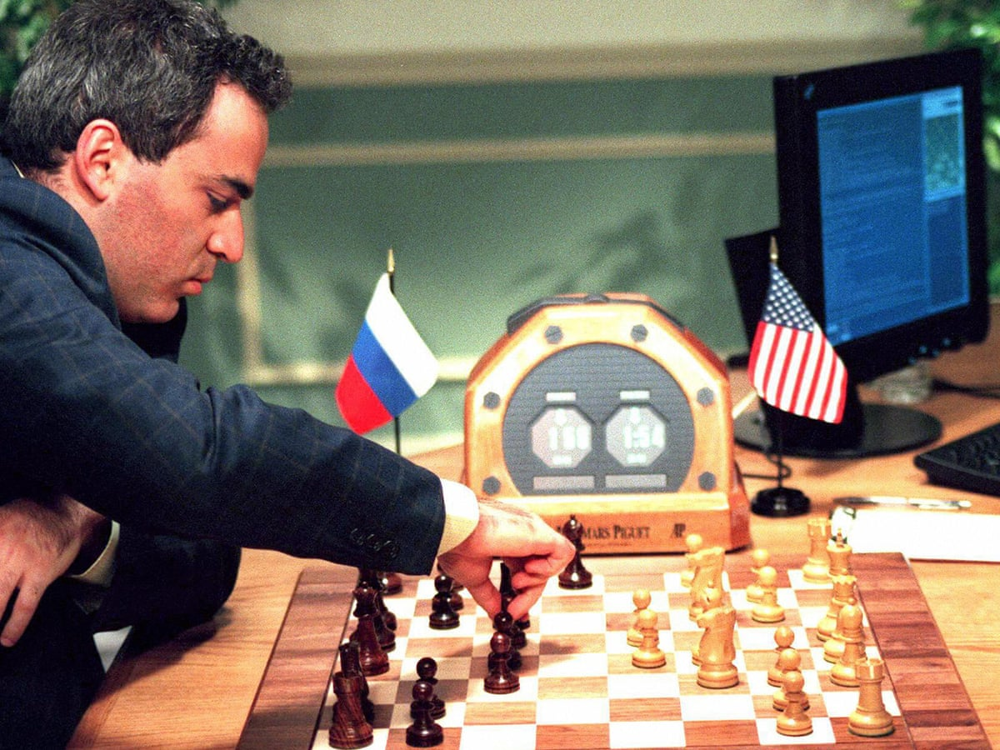

Geschichte der Künstlichen Intelligenz
Von antiken Automaten bis zur generativen KI
Die frühesten Rechengeräte
Der Lebombo-Knochen (~35.000 v. Chr.)
Der Ishango-Knochen (~20.000 v. Chr.)
Der Lebombo-Knochen mit 29 Kerben ist das älteste bekannte mathematische Artefakt, ein externer Speicher für Zahlen.
Der Ishango-Knochen zeigt Primzahlen (11, 13, 17, 19) und Gruppen, die sich zu 60 summieren, möglicherweise ein Mondkalender oder ein Rechenhilfsmittel.
Der Antikythera-Mechanismus
Der weltweit älteste bekannte Analogcomputer, ein handgetriebenes Planetarium mit mindestens 30 ineinandergreifenden Bronzezahnrädern.
Er konnte astronomische Positionen, Finsternisse und den Zyklus der Olympischen Spiele Jahrzehnte im Voraus berechnen.
Aristoteles und die formale Logik
Aristoteles schuf den Syllogismus, das erste System, das die Struktur eines Arguments von seinem Inhalt trennt:
Alle Menschen sind sterblich.
Sokrates ist ein Mensch.
∴ Sokrates ist sterblich.
Ramon Llull: Mechanisiertes Denken

Der mallorquinische Mystiker Ramon Llull entwarf rotierende Papierscheiben mit Buchstaben für philosophische Konzepte.
Durch Drehen der Scheiben konnte man jede logisch mögliche Kombination von Ideen erzeugen, der erste dokumentierte Versuch einer mechanisierten logischen Sprache.
Gottfried Wilhelm Leibniz
Leibniz formalisierte das Binärsystem (0 und 1) und baute die erste funktionierende automatische Rechenmaschine (1700).
Seine Vision: Jedes Konzept als Zahl darstellen, komplexe Argumente mit algebraischer Sicherheit lösen, eine "Mathesis Universalis".
Babbage & Ada Lovelace

Charles Babbage entwarf die Analytical Engine, mit getrenntem Speicher ("Store") und Prozessor ("Mill"), programmierbar über Lochkarten.
Ada Lovelace schrieb den ersten komplexen Algorithmus für eine Maschine und erkannte: Die Engine kann alles verarbeiten, Musik, Logik, Wissenschaft.
Boole und Zuse: Vom Denken zum Rechnen
George Boole (1854)
Reduzierte Aristoteles' Logik auf algebraische Gleichungen, Wahrheit und Falschheit als binäre Variablen (0 und 1).
Deshalb heißen true/false noch heute Booleans.
Konrad Zuse (1937–1941)

Baute im Wohnzimmer seiner Eltern den Z3, den ersten funktionsfähigen, programmierbaren, vollautomatischen Digitalcomputer.
Konrad Zuse: Zu faul zum Rechnen
Finanziert durch Familienersparnisse
Weitgehend allein gebaut
Kannte Turing nicht, arbeitete parallel
Versteckte den Z4 in den Alpen vor den Nazis
Alan Turing
1936: Die Turing-Maschine, ein theoretisches Modell, das beweist, dass eine einfache Maschine jede algorithmische Logik simulieren kann.
1950: Der Turing-Test, ein Computer gilt als intelligent, wenn er in einem Gespräch nicht von einem Menschen unterschieden werden kann.
Die ersten künstlichen Neuronen

McCulloch & Pitts (1943) bewiesen, dass ein vereinfachtes Neuron logische Operationen ausführen kann.

SNARC (1951), Minsky & Edmonds bauten das erste physische neuronale Netz: 40 Neuronen aus Vakuumröhren, die eine Ratte im Labyrinth simulierten.
El Ajedrecista, Die erste praktische KI
Bevor der Begriff "Künstliche Intelligenz" existierte, baute der spanische Ingenieur Torres Quevedo das erste funktionierende KI-System.
Ein elektromechanischer Schach-Endspiel-Spieler, der automatisch Matt setzen konnte (König + Turm gegen König).
Garantierte Matt in weniger als 63 Zügen gegen jede Verteidigung. Noch 1951 spielte KI-Pionier Norbert Wiener dagegen.
Frank Rosenblatt: Das Perceptron

Das Mark I Perceptron, ein massives Hardware-System mit Elektromotoren als "Gewichte". Es konnte lernen, indem es seine Gewichte automatisch anpasste.
Die New York Times feierte es als Beginn einer Maschine, die "laufen, sprechen und denken" könne.
Was die New York Times 1958 versprach
"The Navy revealed the embryo of an electronic computer today that it expects will be able to walk, talk, see, write, reproduce itself and be conscious of its existence."
zwischen Vorhersage und Erfüllung
Der erste KI-Winter
1969: Minsky & Papert bewiesen mathematisch, dass ein einschichtiges Perceptron das XOR-Problem nicht lösen kann.
1973: Der Lighthill Report zerstörte das Vertrauen in KI-Forschung. Fördergelder wurden massiv gekürzt.
Erst in den 1980ern mit Backpropagation (Rumelhart et al., 1986) erholte sich das Feld.
Wie lernt ein neuronales Netz?
Ein neuronales Netz besteht aus Schichten. Jede Schicht transformiert die Eingabe:
Jede Schicht hat Gewichte (Knöpfe, an denen gedreht wird) und eine Aktivierungsfunktion (die Nicht-Linearität einführt).
Zwei Phasen des Lernens
Die Kettenregel – Herzstück von Backprop
Der Gradient wird durch Multiplikation lokaler Ableitungen berechnet:
Das Gewichts-Update
Nachdem wir den Gradienten kennen, machen wir einen Schritt bergab:
Die Loss-Landschaft
Der Ball folgt dem Gradienten bergab. Ziehen = Drehen, Scroll = Zoom, Klick = Ball neu platzieren.
Das Vanishing Gradient Problem
In einem tiefen Netz verschwindet das Fehlersignal exponentiell:
Residual Networks – Die Lösung
Statt die gesamte Transformation zu lernen, lernt das Netz nur die Abweichung:
Der Residual Block – Architektur
Wenn Dimensionen passen:
Einfache Addition – kein zusätzlicher Parameter nötig.
Wenn Dimensionen nicht passen:
$W_s$ = 1×1 Convolution zur Dimensionsanpassung.
Meilensteine der Neuronalen Netze
Der Weg: Perceptron → Transformer
Deep Blue besiegt Kasparov

IBMs Deep Blue besiegte den Schachweltmeister durch 200 Millionen Stellungsbewertungen pro Sekunde, nicht durch Intuition, sondern durch rohe Rechenleistung.
Der Höhepunkt der symbolischen KI: handgefertigte Regeln + Brute-Force-Suche.
LSTM: Das Arbeitspferd der KI
1991: Hochreiter identifizierte das "Vanishing Gradient"-Problem, Fehlersignale verschwinden in tiefen Netzen.
1997: Hochreiter & Schmidhuber veröffentlichten Long Short-Term Memory, heute das meistzitierte KI-Paper des 20. Jahrhunderts.
- Google Spracherkennung (2015)
- Google Translate (2016)
- Facebook Übersetzung (30 Mrd. Übersetzungen/Woche)
- Apple Quicktype auf ~1 Mrd. iPhones
- Amazon Alexa
Wie Gamer die KI retteten
Die mathematischen Operationen für 3D-Videospiele (Matrixmultiplikationen) sind identisch mit denen für neuronale Netze.
Tausende einfache Kerne
Throughput: SIMD
Wenige mächtige Kerne
Latenz: MIMD
2012: AlexNet, tiefe CNNs auf GPUs schlugen alle traditionellen Methoden bei ImageNet. Die Deep-Learning-Revolution begann.
Warum GPU? Was hat das mit Gamern zu tun?
Um ein 3D-Spiel flüssig darzustellen, muss die Grafikkarte Millionen von Pixeln gleichzeitig berechnen. Jeder Pixel braucht eine Matrixmultiplikation (Position, Licht, Farbe).
Gaming-GPU
Berechne für 2 Millionen Pixel gleichzeitig:
Farbe = Licht × Oberfläche × Position
→ Tausende simple Kerne, alle machen dasselbe parallel
KI-Training
Berechne für Milliarden Gewichte gleichzeitig:
Neuron = Gewicht × Input + Bias
→ Exakt dieselbe Mathematik: Matrixmultiplikation
🎯 Die Pointe
Die Gaming-Industrie hat Milliarden Dollar in GPU-Entwicklung investiert, damit Call of Duty flüssig läuft. KI-Forscher haben diese Hardware dann einfach zweckentfremdet – weil die Mathe identisch ist.
Die verrückteste Idee der Computergeschichte
64.000 Menschen in einem Theater
rechnen parallel das Wetter
16.384 GPU-Kerne auf einem Chip
rechnen parallel ein Netz
Attention Is All You Need
Der Transformer ersetzte sequentielle Verarbeitung durch parallelisierbare Self-Attention.
Was Self-Attention macht:
Für jedes Wort im Satz fragt der Mechanismus: "Welche anderen Wörter sind für mich gerade relevant?"
Beispiel: "Die Bank am Fluss" → Attention auf "Fluss" = Parkbank. "Geld auf die Bank" → Attention auf "Geld" = Geldinstitut.
Warum war das revolutionär?
- Parallelisierbar: Alle Wörter werden gleichzeitig verarbeitet (nicht sequentiell wie bei LSTM)
- Lange Kontexte: Jedes Wort kann direkt auf jedes andere zugreifen, egal wie weit entfernt
- Skalierbar: Mehr Daten + mehr Compute = bessere Ergebnisse (The Bitter Lesson)
Der ELIZA-Effekt
~200 Zeilen Code. Kein Verständnis.
Reaktion: "Bitte verlassen Sie den Raum, ich möchte privat sprechen."
175 Mrd. Parameter. Kein Bewusstsein.
Reaktion: Menschen sagen "bitte" und "danke".
Von GPT-1 zu ChatGPT
117 Mio. Parameter. Bewies: Autoregressive Vorhersage + Transformer = mächtige Repräsentationen.
1.5 Mrd. Parameter. Zero-Shot-Fähigkeiten. OpenAI hielt es zunächst zurück, "zu gefährlich".
175 Mrd. Parameter. Few-Shot-Learning ohne Fine-Tuning. Kosten: ~$4.6 Mio. Training.
GPT-3.5 + RLHF. 100 Mio. Nutzer in 2 Monaten. KI wird Mainstream.
Der Schlüssel war nicht nur Skalierung, sondern RLHF (Reinforcement Learning from Human Feedback): Menschen bewerteten Antworten, und das Modell lernte, hilfreicher und sicherer zu antworten.
Die Hardware Lottery
Warum gewinnen bestimmte Ideen – und andere nicht?
Analogie: Musik
Nicht die "beste" Musik gewinnt – sondern die, die zur Gitarre passt. Weil jeder eine Gitarre hat.
Realität: KI
Nicht der "beste" Algorithmus gewinnt – sondern der, der zur GPU passt. Weil jedes Labor GPUs hat.
🏆 Gewinner (GPU-freundlich)
- Deep Learning (Matrixmultiplikation)
- Transformer (parallelisierbar)
- CNNs (reguläre Gitteroperationen)
⚰️ Verlierer (nicht GPU-freundlich)
- Symbolische KI (sequentiell, regelbasiert)
- Graphen-Netze (irreguläre Strukturen)
- Spiking Neural Networks (zeitbasiert)
The Bitter Lesson
Menschliche Cleverness
Scale + Compute
Der Weg zur KI, Ein Überblick
Von prähistorischen Rechenhilfen über mechanische Automaten, formale Logik, elektronische Computer und neuronale Netze bis zur generativen KI, eine Geschichte der Abstraktion.